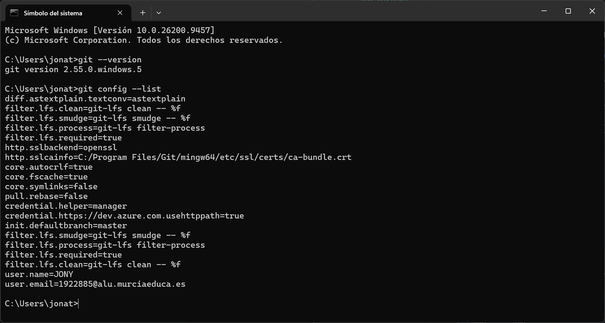
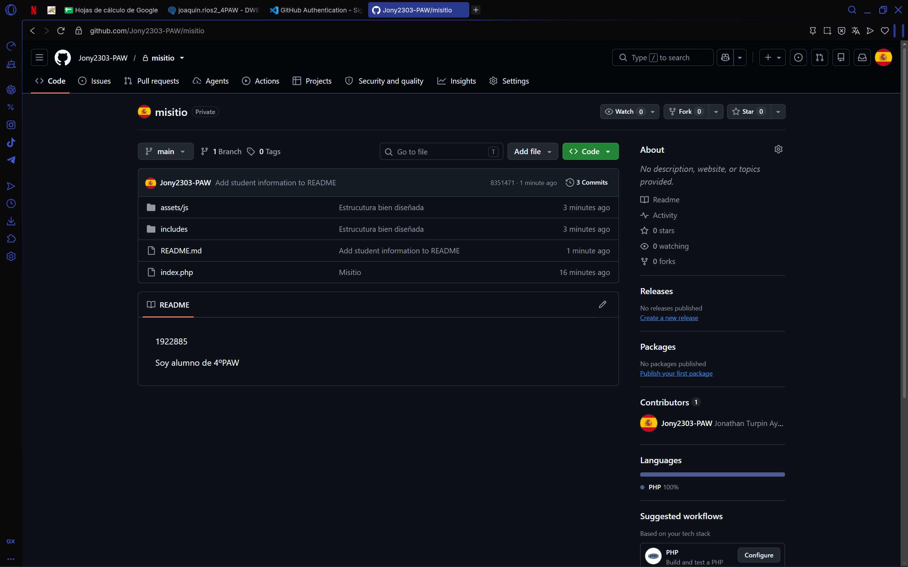
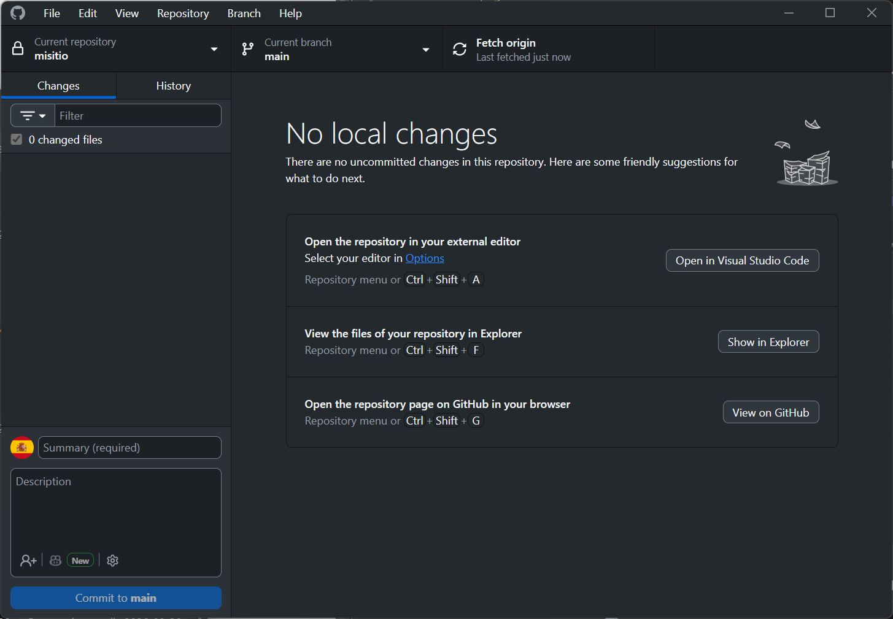
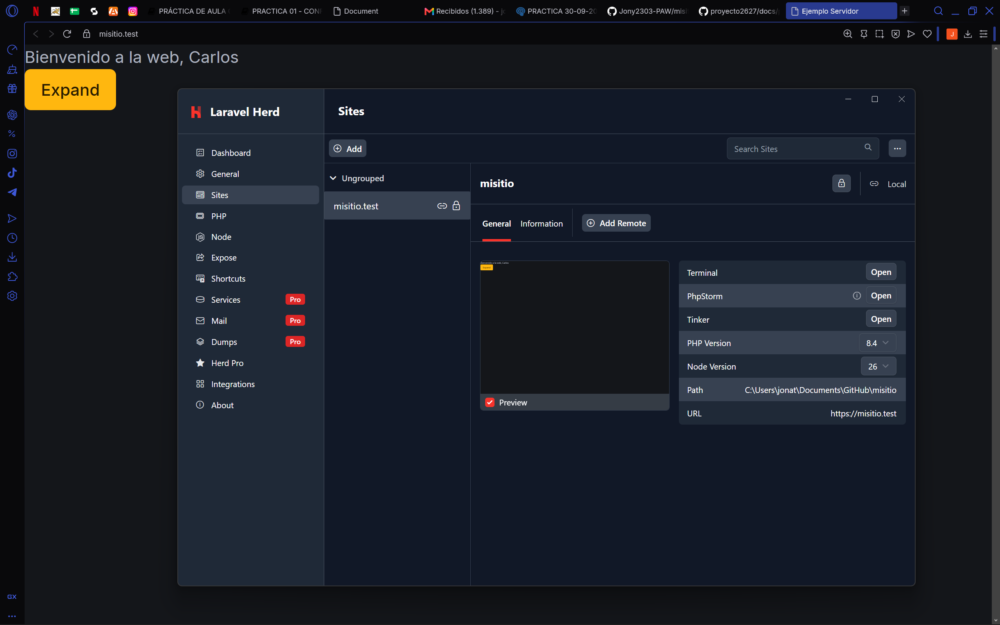

Documento sobre la instalacion de ProperDocs
- Git instalado y configurado en local

- GitHub CLI instalado y configurado (gh auth status)

- Herd instalado con la versión de PHP 8.4

- Repositorio "misitio" clonado en local

- Herd enlazado al repositorio "misitio" y sirviéndolo en HTTPS

Resumen de los elementos y plugins
El resumen es que en esta pagina he utilizado elementos y plugins para agilizar la busqueda y tiene elementos como el tema
Elementos

Plugins